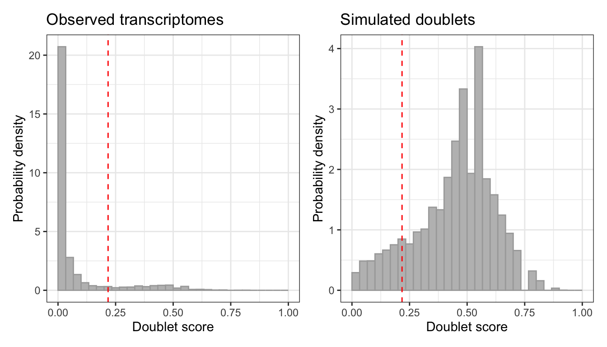
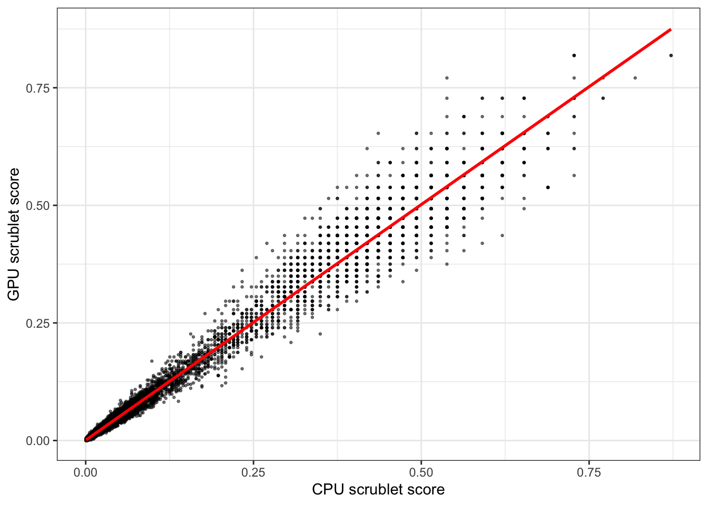

library(bixverse)
library(bixverse.gpu)
library(data.table)
#> Warning: package 'data.table' was built under R version 4.5.2
library(magrittr)
#> Warning: package 'magrittr' was built under R version 4.5.2
library(ggplot2)
#> Warning: package 'ggplot2' was built under R version 4.5.2GPU-accelerated Scrublet
2026-08-16
Intro
Scrublet (Wolock et al., 2019) detects doublets by simulating them. It combines random pairs of observed cells into artificial doublets, projects observed and simulated cells into a shared PC space, builds a kNN graph over the lot, and scores each observed cell by how many of its neighbours are simulated doublets. Otsu’s method then cuts the score distribution into singlets and doublets.
Three stages move to the GPU in scrublet_gpu_sc(): the randomised sparse SVD of the observed cells, the projection of the simulated doublets into that PC space, and the kNN over the combined embedding. HVG selection, the doublet simulation itself, the kNN classifier and the Otsu threshold stay on the CPU.
So the win is bounded by how much of the run those three own, and that share grows with cell count. The combined embedding is (1 + sim_doublet_ratio) * n_cells rows tall, and an exhaustive kNN over it is quadratic. At 5k cells the setup cost dominates and you will not see much. At 100k it gets painful on the CPU and the GPU starts to matter.
If you have not seen the CPU version, read the bixverse doublet detection vignette first. The result class and everything downstream of it are identical here.
Note
Vignettes were built locally on a MacBook Pro M1 Max. The GH runners were just too slow and do not have proper GPU support. This gives an idea of speed on a decent, but older machine.
The data
PBMCs with demuxlet ground truth calls. Each barcode is classified as a singlet (SNG) or a doublet (DBL), so there is something real to score against.
Load the demuxlet PBMCs (click to expand)
doublet_path <- download_demuxlet_pbmc()
tempdir_doublet <- file.path(tempdir(), "demuxlet_bixverse_gpu")
dir.create(tempdir_doublet, showWarnings = FALSE, recursive = TRUE)
demuxlet_data <- fread(file.path(doublet_path, "demuxlet_calls.tsv"))
sc_object <- SingleCells(dir_data = tempdir_doublet)
mtx_io_params <- get_cell_ranger_params(doublet_path)
mtx_io_params$cells_as_rows <- TRUE
sc_object <- load_mtx(
object = sc_object,
sc_mtx_io_param = mtx_io_params,
streaming = 0L
)
#> Loading data directly into memory for CSR to CSC conversion.
#> Loading observations data from flat file into the DuckDB.
#> duckdb is storing downloaded extensions and secrets under ~/.duckdb:
#> ℹ /Users/gregorlueg/.duckdb
#> This persists across sessions and is shared with the DuckDB CLI and other clients.
#> ℹ Run duckdb(shared_home = FALSE) to use a temporary directory instead.
#> ℹ See ?duckdb_storage for details and alternatives.
#> Loading variable data from flat file into the DuckDB.
#>
#> duckdb is storing downloaded extensions and secrets under ~/.duckdb:
#> ℹ /Users/gregorlueg/.duckdb
#> This persists across sessions and is shared with the DuckDB CLI and other clients.
#> ℹ Run duckdb(shared_home = FALSE) to use a temporary directory instead.
#> ℹ See ?duckdb_storage for details and alternatives.
#> duckdb is storing downloaded extensions and secrets under ~/.duckdb:
#> ℹ /Users/gregorlueg/.duckdb
#> This persists across sessions and is shared with the DuckDB CLI and other clients.
#> ℹ Run duckdb(shared_home = FALSE) to use a temporary directory instead.
#> ℹ See ?duckdb_storage for details and alternatives.
#> duckdb is storing downloaded extensions and secrets under ~/.duckdb:
#> ℹ /Users/gregorlueg/.duckdb
#> This persists across sessions and is shared with the DuckDB CLI and other clients.
#> ℹ Run duckdb(shared_home = FALSE) to use a temporary directory instead.
#> ℹ See ?duckdb_storage for details and alternatives.
#> duckdb is storing downloaded extensions and secrets under ~/.duckdb:
#> ℹ /Users/gregorlueg/.duckdb
#> This persists across sessions and is shared with the DuckDB CLI and other clients.
#> ℹ Run duckdb(shared_home = FALSE) to use a temporary directory instead.
#> ℹ See ?duckdb_storage for details and alternatives.
#> duckdb is storing downloaded extensions and secrets under ~/.duckdb:
#> ℹ /Users/gregorlueg/.duckdb
#> This persists across sessions and is shared with the DuckDB CLI and other clients.
#> ℹ Run duckdb(shared_home = FALSE) to use a temporary directory instead.
#> ℹ See ?duckdb_storage for details and alternatives.
#> duckdb is storing downloaded extensions and secrets under ~/.duckdb:
#> ℹ /Users/gregorlueg/.duckdb
#> This persists across sessions and is shared with the DuckDB CLI and other clients.
#> ℹ Run duckdb(shared_home = FALSE) to use a temporary directory instead.
#> ℹ See ?duckdb_storage for details and alternatives.
#> duckdb is storing downloaded extensions and secrets under ~/.duckdb:
#> ℹ /Users/gregorlueg/.duckdb
#> This persists across sessions and is shared with the DuckDB CLI and other clients.
#> ℹ Run duckdb(shared_home = FALSE) to use a temporary directory instead.
#> ℹ See ?duckdb_storage for details and alternatives.
#> duckdb is storing downloaded extensions and secrets under ~/.duckdb:
#> ℹ /Users/gregorlueg/.duckdb
#> This persists across sessions and is shared with the DuckDB CLI and other clients.
#> ℹ Run duckdb(shared_home = FALSE) to use a temporary directory instead.
#> ℹ See ?duckdb_storage for details and alternatives.
#> duckdb is storing downloaded extensions and secrets under ~/.duckdb:
#> ℹ /Users/gregorlueg/.duckdb
#> This persists across sessions and is shared with the DuckDB CLI and other clients.
#> ℹ Run duckdb(shared_home = FALSE) to use a temporary directory instead.
#> ℹ See ?duckdb_storage for details and alternatives.
#> duckdb is storing downloaded extensions and secrets under ~/.duckdb:
#> ℹ /Users/gregorlueg/.duckdb
#> This persists across sessions and is shared with the DuckDB CLI and other clients.
#> ℹ Run duckdb(shared_home = FALSE) to use a temporary directory instead.
#> ℹ See ?duckdb_storage for details and alternatives.
#> duckdb is storing downloaded extensions and secrets under ~/.duckdb:
#> ℹ /Users/gregorlueg/.duckdb
#> This persists across sessions and is shared with the DuckDB CLI and other clients.
#> ℹ Run duckdb(shared_home = FALSE) to use a temporary directory instead.
#> ℹ See ?duckdb_storage for details and alternatives.
#> duckdb is storing downloaded extensions and secrets under ~/.duckdb:
#> ℹ /Users/gregorlueg/.duckdb
#> This persists across sessions and is shared with the DuckDB CLI and other clients.
#> ℹ Run duckdb(shared_home = FALSE) to use a temporary directory instead.
#> ℹ See ?duckdb_storage for details and alternatives.
#> duckdb is storing downloaded extensions and secrets under ~/.duckdb:
#> ℹ /Users/gregorlueg/.duckdb
#> This persists across sessions and is shared with the DuckDB CLI and other clients.
#> ℹ Run duckdb(shared_home = FALSE) to use a temporary directory instead.
#> ℹ See ?duckdb_storage for details and alternatives.
#> duckdb is storing downloaded extensions and secrets under ~/.duckdb:
#> ℹ /Users/gregorlueg/.duckdb
#> This persists across sessions and is shared with the DuckDB CLI and other clients.
#> ℹ Run duckdb(shared_home = FALSE) to use a temporary directory instead.
#> ℹ See ?duckdb_storage for details and alternatives.
#> duckdb is storing downloaded extensions and secrets under ~/.duckdb:
#> ℹ /Users/gregorlueg/.duckdb
#> This persists across sessions and is shared with the DuckDB CLI and other clients.
#> ℹ Run duckdb(shared_home = FALSE) to use a temporary directory instead.
#> ℹ See ?duckdb_storage for details and alternatives.
sc_object
#> Single cell experiment (Single Cells).
#> No cells (original): 14528
#> To keep n: 14528
#> No genes: 12622
#> HVG calculated: FALSE
#> PCA calculated: FALSE
#> Other embeddings: none
#> KNN generated: FALSE
#> SNN generated: FALSE
#> MAGIC imputed: none
#> Stale artefacts: noneA small helper for precision, recall and F1 against the demuxlet calls.
doublet_metrics <- function(
predicted,
actual,
pos_predicted = TRUE,
pos_actual = "DBL"
) {
tp <- sum(predicted == pos_predicted & actual == pos_actual)
fp <- sum(predicted == pos_predicted & actual != pos_actual)
fn <- sum(predicted != pos_predicted & actual == pos_actual)
precision <- tp / (tp + fp)
recall <- tp / (tp + fn)
f1 <- 2 * (precision * recall) / (precision + recall)
list(precision = precision, recall = recall, f1 = f1)
}Running it
gpu_params <- params_scrublet_gpu(expected_doublet_rate = 0.12)
gpu_time <- system.time({
scrublet_gpu <- scrublet_gpu_sc(
object = sc_object,
scrublet_params = gpu_params
)
})
scrublet_gpu
#> ScrubletRes: 14528 cells, 1765 doublets (12.1%)
#> Threshold: 0.2174
#> Detected doublet rate: 12.1%
#> Detectable fraction: 87.7%
#> Overall doublet rate: 13.9%
#> Simulated doublets: 21792
plot(scrublet_gpu)
The result is bixverse’s ScrubletRes, not a GPU-specific class, so get_data(), call_doublets_manual() and add_sc_new_obs() all work exactly as they do on the CPU path.
gpu_dt <- get_data(scrublet_gpu)
gpu_dt[, Barcode := get_cell_names(sc_object)]
gpu_dt <- merge(gpu_dt, demuxlet_data, by = "Barcode")
doublet_metrics(predicted = gpu_dt$doublet, actual = gpu_dt$Call)
#> $precision
#> [1] 0.6628895
#>
#> $recall
#> [1] 0.7504811
#>
#> $f1
#> [1] 0.7039711Picking a kNN backend
The kNN over the combined embedding is the one stage where you get a real choice, and params_scrublet_gpu() exposes it through knn_backend.
"gpu" with knn_method = "exhaustive" is the default. It is exact, has no tuning knobs, and is usually the right answer up to a few hundred thousand cells. "ivf" is approximate, flat in k, and only starts paying off above that. Recall loss matters more here than it does elsewhere, because the doublet score is a neighbour count: drop neighbours and you bias every score downwards.
params_ivf <- params_scrublet_gpu(
expected_doublet_rate = 0.12,
knn = list(knn_method = "ivf", n_list = 512L, n_probe = 32L)
)
params_cpu_knn <- params_scrublet_gpu(
expected_doublet_rate = 0.12,
knn_backend = "cpu",
knn = list(knn_method = "hnsw")
)knn_backend = "cpu" keeps the CPU indices (kmknn, HNSW, Annoy, NN-descent) while the SVD and the projection stay on the device. It costs a host round trip on a matrix that is (1 + sim_doublet_ratio) * n_cells rows tall, so it is there for reproducing a CPU run, not for speed.
The two backends take different keys. knn is validated against whichever backend you named, and a key that belongs to the other one errors rather than being silently ignored:
params_scrublet_gpu(knn = list(m = 32L))
#> Error in `params_scrublet_gpu()`:
#> ! Unknown kNN parameter(s) for backend 'gpu': m. Allowed: k, knn_method, ann_dist, n_list, n_probe.CPU versus GPU
Same object, same parameters, same seed.
cpu_params <- params_scrublet(
expected_doublet_rate = 0.12,
pca = list(no_pcs = gpu_params$no_pcs)
)
cpu_time <- system.time({
scrublet_cpu <- scrublet_sc(
object = sc_object,
scrublet_params = cpu_params
)
})
data.table(
version = c("CPU", "GPU"),
seconds = round(c(cpu_time[["elapsed"]], gpu_time[["elapsed"]]), 2)
)[, speed_up := round(seconds[1] / seconds, 2)][]
#> version seconds speed_up
#> <char> <num> <num>
#> 1: CPU 2.34 1.00
#> 2: GPU 0.96 2.44Do the calls agree?
cpu_dt <- get_data(scrublet_cpu)
cpu_dt[, Barcode := get_cell_names(sc_object)]
cpu_dt <- merge(cpu_dt, demuxlet_data, by = "Barcode")
cpu_metrics <- doublet_metrics(cpu_dt$doublet, cpu_dt$Call)
gpu_metrics <- doublet_metrics(gpu_dt$doublet, gpu_dt$Call)
data.table(
version = c("CPU", "GPU"),
precision = round(c(cpu_metrics$precision, gpu_metrics$precision), 3),
recall = round(c(cpu_metrics$recall, gpu_metrics$recall), 3),
f1 = round(c(cpu_metrics$f1, gpu_metrics$f1), 3),
threshold = round(c(scrublet_cpu$threshold, scrublet_gpu$threshold), 4)
)
#> version precision recall f1 threshold
#> <char> <num> <num> <num> <num>
#> 1: CPU 0.667 0.752 0.707 0.2185
#> 2: GPU 0.663 0.750 0.704 0.2174
ggplot(
data = data.table(
cpu = scrublet_cpu$doublet_scores_obs,
gpu = scrublet_gpu$doublet_scores_obs
),
mapping = aes(x = cpu, y = gpu)
) +
geom_point(size = 0.5, alpha = 0.5) +
geom_smooth(method = "lm", colour = "red", se = TRUE) +
xlab("CPU scrublet score") +
ylab("GPU scrublet score") +
theme_bw()
#> `geom_smooth()` using formula = 'y ~ x'
cor(
scrublet_cpu$doublet_scores_obs,
scrublet_gpu$doublet_scores_obs,
method = "pearson"
)
#> [1] 0.9901312The scores correlate, they do not match. Both paths use a randomised SVD but draw a different sketch, and the GPU index breaks neighbour ties differently. On top of that Otsu’s threshold is a step function of the histogram bins, so the cut can land one bin over and flip a handful of borderline cells. Judge the two by their metrics, not by a diff.
Per-sample runs
Doublet rates track cell loading, so a pooled experiment usually wants one threshold per sample rather than one for everything. group_by runs the whole pipeline per level and stitches the results back together in original cell order.
scrublet_grouped <- scrublet_gpu_sc(
object = sc_object,
scrublet_params = gpu_params,
group_by = "sample_id"
)
scrublet_grouped$thresholdthreshold comes back as a named vector, one entry per group, and call_doublets_manual(..., for_sample = "sample_A") adjusts a single group without touching the others.
Clean up
unlink(tempdir_doublet, recursive = TRUE, force = TRUE)What is next
HVG selection is the obvious next lever. It is a full pass over the gene-major store and on wide data it can outweigh the SVD it feeds. The doublet simulation is disk-bound rather than compute-bound, so that one probably stays on the host. Watch this space.